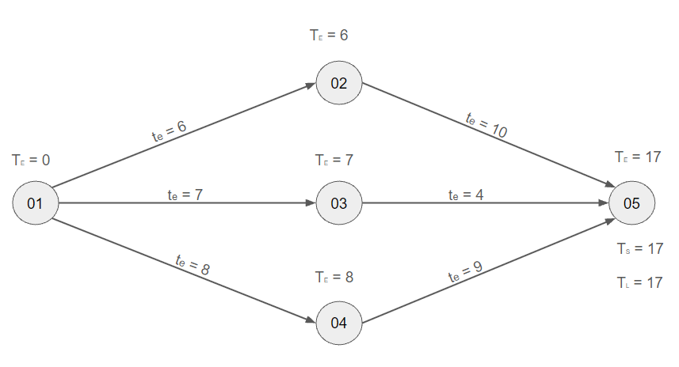

Você disse que podia completar o serviço em 18 semanas (TE).
A Administração decide: “Ótimo, então complete o serviço em 18 semanas, mas não mais”. Sendo assim, o tempo máximo que você pode empregar neste trabalho, é o fixado pela administração (TS = 18 semanas). Isto determina o último tempo permissível (TL) dentro do qual você pode completar este trabalho, de acordo com o projeto pré-estabelecido. Conclui-se que o último tempo permissível deve coincidir com o prazo pré-estabelecido.
TS = TL
Os valores dos TL's são calculados para cada evento e inseridos abaixo dos eventos da rede PERT. Os TL's são calculados de maneira exatamente oposta à do cálculo dos TE’s
| 1) | Você começa do último evento e trabalha de trás para diante até o primeiro. |
|---|---|
| 2) | Para calcular o TL para um evento, você deve subtrair o valor do te. do valor TL para |
o evento sucessor.
3) Se mais de um valor de TL é obtido, deve-se escolher o menor valor.
Siga a seguinte rede PERT:

1) O te, para a atividade que liga o Evento 5 e o Evento 2 (Atividade 2-5) é 10 semanas.
Subtraindo 10 semanas do TL de 17 semanas para o Evento 5, obtém-se um TL, de 7 semanas para o Evento 2.